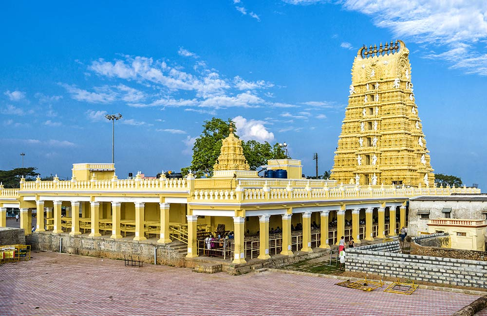

Famous as the City of Palaces, Mysore is one of the most popular tourist destinations in southern India. Brimming with architecture, adventure,
as well as nature, there is a myriad of places to visit in Mysore to be enjoyed by every kind of traveller.
How to reach there?
Mysore is located in India's southwestern Karnataka state.From the Mysore Railway Station, operates many trains like the Mysore Express,
Chamundi Express, Kaveri Express and more which are the connecting link between Mysore and many other cities.Reaching Mysore by road is
again not a very difficult task. Mysore has a well laid network of roads, inside as well as outside the city.
One can even self drive to Mysore from the cities in the close proximity en route the picturesques landscapes.
Top things to do?
This cultural capital of Karnataka, not only offers richness of past but also presents a beautiful amalgamation of historical grandness with
the scenic beauty of nature,
its lakes, waterfalls and gardens. There are many popular places to see in Mysore, each promising a unique experience to visitors.
Visit architectural jewels such as Mysore Palace. Learn about the arts and crafts of Karnataka at Folk Lore Museum, and get a glimpse of the
botanic biodiversity of the state at Regional Museum of Natural History Mysore. The city is indeed a haven for tourists of all kinds.

